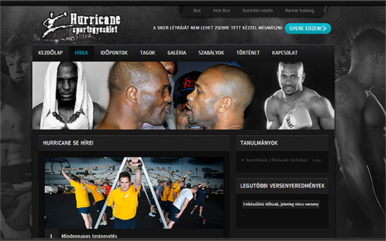

Küldetésünk
Életre kelteni weboldalát

Egy olyan felhasználói élményt nyújtunk Önnek és Ügyfeleinek, ami képes megalapozni egy stabil ügyfél-partner kapcsolatot. Ez nem kíván több erőfeszítést annál, minthogy jelzi számunkra igényét, és Önnel karöltve kihozzuk a maximumot ötletéből. Mindehhez, csak az Ön hozzájárulására van szükségünk, hogy egy olyan környezetet teremthessünk, mely az oldalára látógató felhasználókat visszatérő ügyfelekké avanzsáljuk.
Nagy teljesítményű technológiák
Az együttmükődésünk során, mindig odafigyelünk, hogy a legkorszerübb technológia eljárásokkat használva készítsük el A Weboldalt, megőrizve a vezető trendek által biztosított előnyőket.
Hagyományos társaival ellentétben
A nálunk készült weboldalak a mai modern felhőtechnológiát kihasználva olyan mértékű stabilitást és megbízhatóságot érnek el, hogy avval semmilyen ügyfélterhelés alatt nem fogja úgy érezni, hogy akár egyetlen ügyfelet is elvesztett a weboldal megbízhatatlansága miatt.
Az élmény
A weboldalunkat úgy építettük fel, hogy Ön mint az ügyfelünk, képes legyen a legmélyebbrehatóbb részletekig tájékozódni a weboldal létrehozásának folyamatáról. Ezenkívül létrehoztunk egy olyan felületet teremteni ami nem csak a részletekbemenően képes tájékoztatást nyújtani, hanem személyreszabási felületet is biztosít. Ezt úgy érjük el, hogy Ön képes a fejlesztés menetébe beleszólni, így bármikor ha úgy érzi, hogy megváltoztatna valamit, akkor csak jeleznie kell felénk és mi ennek megfelelően folytatjuk oldala létrehozását. ~~~~Itt Ön dönt, de mi segítünk eligazódni, hogy a létező legjobb élményt nyújtsúk Ügyfeleinek.